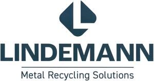

Trade Mark Journal No.2025/029 18 July 2025
WO0000001851587 (6,7,8,9,11,35,37,40,42)
Office of origin: Germany
Date of International Registration:4 October 2024
Date of designation in the UK:
4 October 2024

The mark contains the colour blue.
- Class 6
- Containers of metal for storage and transport; cables and wires of common metal [not for electrical purposes]; containers and transport and packaging items made of metal; waste containers [garbage containers] for industrial use made of metal; metal hardware; common metals, unwrought or semi-wrought; locksmith goods; wear and replacement parts for all the aforesaid goods, included in this class; parts and accessories for all the aforesaid goods, included in this class.
- Class 7
- Plants, devices and machines for the treatment of waste and metal scrap (in particular for pressing, shredding, compacting, mixing, compressing, cutting, conveying, discharging, sorting, extracting, recycling, separating, reprocessing, drying, dedusting, dewatering, packaging, stacking and disposing); presses (in particular hole-drawing presses, scrap presses, cotton presses, baling presses, packing presses, test presses, forging presses, bending and straightening presses, briquetting presses, shearing presses, shear- packing presses, packaging presses, rotary shears, each of the aforesaid also operated electrically, pneumatically and hydraulically); shredding machines (namely mills, crushers and shears for shredding all kinds of materials such as, among others, metal scrap, metal shavings, slag, garbage, wood, paper, rubber, plastic, glass and carbon anodes, in particular scrap shears, press scissors and waste/garbage shears); scrap processing and recycling machines; dispensing machines; electric generators; couplings and devices for power transmission, other than for land vehicles; robots (in particular industrial robots, transport robots; waste processing robots); mechanical equipment for agriculture, earthworks, construction work, oil and gas extraction work and mining work (in particular presses, crushing machines and packaging machines); machine-operated apparatus for collecting and removing waste; machines and machine tools for material processing and production, recycling, separating, shearing, cutting, shredding, chipping, pressing; power-operated tools, construction machines and equipment for construction, demolition, cleaning and maintenance work; emergency and rescue machines and machine tools; machine tools; motors and engines, other than for land vehicles; motors, drives, machine parts and controls for the operation of machines and engines; drive devices for machines; pumps, compressors and blowers; conveyor systems and conveyor belts; assemblies, parts, spare parts and accessories for all the aforesaid goods, included in this class.
- Class 8
- Hand-operated devices and tools for material processing as well as for construction, repair and maintenance work (in particular devices for changing machine parts in machines, e.g. in machines for processing, such as recycling, separating, shearing, cutting, shredding, chipping, pressing of any type of material, such as scrap shears, waste/garbage shears, shear presses, shear packing presses, packing presses, briquetting presses, rotary shears, machine tools); hand-operated devices for collecting and removing waste; lifting tools; knifeware, knifeware and cutting equipment, cutting knives, cutting belts, saw blades, cutting blades, cutting discs (all of the above in particular for tools, equipment, machines and plants); parts and accessories for all the aforesaid goods, included in this class.
- Class 9
- Scientific, research, navigation, surveying, photographic, film, audiovisual, optical, weighing, measuring, signaling, detecting, testing, controlling, rescuing and teaching apparatus and instruments; scientific research and laboratory apparatus, teaching apparatus and simulators; apparatus, instruments and cables for electricity; apparatus and instruments for conducting, switching, converting, storing, regulating or controlling the distribution or use of electricity; control devices and computer-based controls; recorded data; recorded and downloadable media, computer software, blank digital or analog recording and storage media; computer programs and data carriers; information technology, audiovisual, multimedia and photographic devices; computers and computer peripheral devices; devices and instruments for recording, transmitting, reproducing or processing sound, images or data; magnets, magnetizers and demagnetizers; measuring, detection, monitoring and control devices; material testing instruments and machines; navigation, guidance, tracking, targeting and map making devices; optical devices, enhancers and correctors; safety, security, protection and signalling devices; scientific and laboratory devices for treatment using electricity; parts and accessories for all the aforesaid goods, included in this class.
- Class 11
- Flues and installations for conveying exhaust gases; air filters for industrial and household use; dry, wet and electrostatic filters for air regeneration; heating, ventilation, air conditioning and air purification devices and systems; industrial treatment installations; industrial installations for filtering liquids; installations for collecting gases; installations for collecting liquids; installations for separating impurities from molten metals; combustion and pyrolysis plants, in particular waste incineration plants; devices for the thermal, chemical and radioactive disinfection of waste and facilities that come into contact with waste; personal heating and drying implements; parts and accessories for all the aforesaid goods, included in this class.
- Class 35
- Commercial services and consumer information services, namely auctioneering services, rental of vending machines, agency services, organizing and arranging of business introductions, collective purchasing services, commercial evaluation services, preparation of competitions, agency business, import and export services, negotiation and agency services, ordering services, price comparison services, procurement services for third parties, subscription services, retail and wholesale services relating to industrial facilities, containers of metal for storage and transport, cables and wires of common metal [not for electrical purposes], containers and transport and packaging items made of metal, waste containers [garbage containers] for industrial use made of metal, metal hardware, unprocessed and semi-processed materials of metal (not specified for use), locksmith goods, plants, devices and machines for the treatment of waste and metal scrap (in particular for pressing, shredding, compacting, mixing, compressing, cutting, conveying, discharging, sorting, extracting, recycling, separating, reprocessing, drying, dedusting, dewatering, packaging, stacking and disposing), presses (in particular hole-drawing presses, scrap presses, cotton presses, baling presses, packing presses, test presses, forging presses, bending and straightening presses, briquetting presses, shearing presses, shear- packing presses, packaging presses, rotary shears, each of the aforesaid also operated electrically, pneumatically and hydraulically), shredding machines (namely mills, crushers and shears for shredding all kinds of materials such as, among others, metal scrap, metal shavings, slag, garbage, wood, paper, rubber, plastic, glass and carbon anodes, in particular scrap shears, press scissors and waste/garbage shears), scrap processing and recycling machines, dispensing machines, electric generators, couplings and devices for power transmission (other than for land vehicles), robots (in particular industrial robots, transport robots, waste processing robots), mechanical equipment for agriculture, earthworks, construction work, oil and gas extraction work and mining work (in particular presses, crushing machines and packaging machines), machine-operated apparatus for collecting and removing waste, machines and machine tools (for material processing and production, recycling, separating, shearing, cutting, shredding, chipping, pressing), power-operated tools, construction machines and equipment (for construction, demolition, cleaning and maintenance work), emergency and rescue machines and machine tools, machine tools, motors and engines (other than for land vehicles), motors, drives, machine parts and controls for the operation of machines and engines, drive devices for machines, pumps, compressors and blowers, conveyor systems and conveyor belts, hand-operated devices and tools for material processing as well as for construction, repair and maintenance work (in particular devices for changing machine parts in machines, e.g. in machines for processing, such as recycling, separating, shearing, cutting, shredding, chipping, pressing of any type of material, such as scrap shears, waste/garbage shears, shear presses, shear packing presses, packing presses, briquetting presses, rotary shears, machine tools), hand-operated devices for collecting and removing waste, lifting tools, knifeware (in particular for tools, equipment, machines and plants), knifeware and cutting equipment (in particular for tools, equipment, machines and plants), cutting knives (in particular for tools, equipment, machines and plants), cutting belts (in particular for tools, equipment, machines and plants), saw blades (in particular for tools, equipment, machines and plants), cutting blades (in particular for tools, equipment, machines and plants), cutting discs on particular for tools, equipment, machines and plants, scientific, research, navigation, surveying, photographic, film, audiovisual, optical, weighing, measuring, signaling, detecting, testing, controlling, rescuing and teaching apparatus and instruments, scientific research and laboratory apparatus, teaching apparatus and simulators, apparatus, instruments and cables for electricity, apparatus and instruments for conducting, switching, converting, storing, regulating or controlling the distribution or use of electricity, control devices and computer-based controls, recorded data, recorded and downloadable media, computer software, blank digital or analog recording and storage media, computer programs and data carriers, information technology, audiovisual, multimedia and photographic devices, computers and computer peripheral devices, devices and instruments for recording, transmitting, reproducing or processing sound, images or data, magnets, magnetizers and demagnetizers, measuring, detection, monitoring and control devices, material testing instruments and machines, navigation, guidance, tracking, targeting and map making devices, optical devices, enhancers and correctors, safety, security, protection and signalling devices, scientific and laboratory devices for treatment using electricity, exhausts and installations for exhaust fumes, filters for industrial and household use, dry, wet and electrostatic filters for air regeneration, heating, ventilation, air conditioning and air purification devices and systems, industrial treatment installations, industrial installations for filtering liquids, installations for collecting gases, installations for collecting liquids, installations for separating impurities from molten metals, combustion and pyrolysis plants, in particular waste incineration plants, devices for the thermal, chemical and radioactive disinfection of waste and facilities that come into contact with waste, personal heating and drying implements, assemblies for all the aforesaid goods, parts for all the aforesaid goods, wear and spare parts for all the aforesaid goods, accessories for all the aforesaid goods; rental and leasing of items in connection with the provision of the aforementioned services, included in this class; consultancy and information relating to the aforesaid services, included in this class.
- Class 37
- Rental of tools, construction machinery and equipment for construction, assembly, demolition, installation, cleaning, repair and maintenance work; rental and leasing of items in connection with the provision of the aforementioned services, included in this class; consultancy and information relating to the aforesaid services, included in this class.
- Class 40
- Custom fabrication and manufacturing services; energy production (in particular from renewable sources); materials treatment, processing and conversion; recycling of waste and trash; sorting of waste and recyclable materials; air and water conditioning and purification; rental of equipment for the treatment and transformation of materials, for energy production and for custom manufacturing; rental and leasing of items in connection with the provision of the aforementioned services, included in this class; consultancy and information relating to the aforesaid services, included in this class.
- Class 42
- Design services; industrial analysis, industrial research and industrial designer services; IT services (in particular development, programming and implementation of software, development of computer hardware, hosting services, software as a service [saas] and rental of software, rental of computer hardware and systems, IT consultancy and information services, IT security services, IT protection services and IT repair services, data duplication and conversion services, data coding services, computer analysis and diagnostics, research and development and implementation of computers and computer systems, computer project management services, data mining, digital watermarking, computer technology consulting services, technological services relating to computers, computer network services, updating computer system data bases, data migration services, updating websites for third parties, monitoring computer systems remotely); testing, authentication and quality control; science and technology services; design and development of computer hardware and software; all of the aforementioned services in relation to industrial facilities, containers of metal for storage and transport, cables and wires of common metal [not for electrical purposes], containers and transport and packaging items made of metal, waste containers [garbage containers] for industrial use made of metal, metal hardware, unprocessed and semi-processed materials of metal (not specified for use), locksmith goods, plants, devices and machines for the treatment of waste and metal scrap (in particular for pressing, shredding, compacting, mixing, compressing, cutting, conveying, discharging, sorting, extracting, recycling, separating, reprocessing, drying, dedusting, dewatering, packaging, stacking and disposing), presses (in particular hole-drawing presses, scrap presses, cotton presses, baling presses, packing presses, test presses, forging presses, bending and straightening presses, briquetting presses, shearing presses, shear-packing presses, packaging presses, rotary shears, each of the aforesaid also operated electrically, pneumatically and hydraulically), shredding machines (namely mills, crushers and shears for shredding all kinds of materials such as, among others, metal scrap, metal shavings, slag, garbage, wood, paper, rubber, plastic, glass and carbon anodes, in particular scrap shears, press scissors and waste/garbage shears), scrap processing and recycling machines, dispensing machines, electric generators, couplings and devices for power transmission (other than for land vehicles), robots (in particular industrial robots, transport robots, waste processing robots), mechanical equipment for agriculture, earthworks, construction work, oil and gas extraction work and mining work (in particular presses, crushing machines and packaging machines), machine-operated apparatus for collecting and removing waste, machines and machine tools (for material processing and production, recycling, separating, shearing, cutting, shredding, chipping, pressing), power-operated tools, construction machines and equipment (for construction, demolition, cleaning and maintenance work), emergency and rescue machines and machine tools, machine tools, motors and engines (other than for land vehicles), motors, drives, machine parts and controls for the operation of machines and engines, drive devices for machines, pumps, compressors and blowers, conveyor systems and conveyor belts, hand-operated devices and tools for material processing as well as for construction, repair and maintenance work (in particular devices for changing machine parts in machines, e.g. in machines for processing, such as recycling, separating, shearing, cutting, shredding, chipping, pressing of any type of material, such as scrap shears, waste/garbage shears, shear presses, shear packing presses, packing presses, briquetting presses, rotary shears, machine tools), hand-operated devices for collecting and removing waste, lifting tools, knifeware (in particular for tools, equipment, machines and plants), knifeware and cutting equipment (in particular for tools, equipment, machines and plants), cutting knives (in particular for tools, equipment, machines and plants), cutting belts (in particular for tools, equipment, machines and plants), saw blades (in particular for tools, equipment, machines and plants), cutting blades (in particular for tools, equipment, machines and plants), cutting discs (in particular for tools, equipment, machines and plants), scientific, research, navigation, surveying, photographic, film, audiovisual, optical, weighing, measuring, signaling, detecting, testing, controlling, rescuing and teaching apparatus and instruments, scientific research and laboratory apparatus, teaching apparatus and simulators, apparatus, instruments and cables for electricity, apparatus and instruments for conducting, switching, converting, storing, regulating or controlling the distribution or use of electricity, control devices and computer- based controls, recorded data, recorded and downloadable media, computer software, blank digital or analog recording and storage media, computer programs and data carriers, information technology, audiovisual, multimedia and photographic devices, computers and computer peripheral devices, devices and instruments for recording, transmitting, reproducing or processing sound, images or data, magnets, magnetizers and demagnetizers, measuring, detection, monitoring and control devices, material testing instruments and machines, navigation, guidance, tracking, targeting and map making devices, optical devices, enhancers and correctors, safety, security, protection and signalling devices, scientific and laboratory devices for treatment using electricity, exhausts and installations for exhaust fumes, filters for industrial and household use, dry, wet and electrostatic filters for air regeneration, heating, ventilation, air conditioning and air purification devices and systems, industrial treatment installations, industrial installations for filtering liquids, installations for collecting gases, installations for collecting liquids, installations for separating impurities from molten metals, combustion and pyrolysis plants, in particular waste incineration plants, devices for the thermal, chemical and radioactive disinfection of waste and facilities that come into contact with waste, personal heating and drying implements, assemblies for all the aforesaid goods, parts for all the aforesaid goods, wear and spare parts for all the aforesaid goods, accessories for all the aforesaid goods; engineering services (in particular relating to robotics); engineering services in mechanical and plant engineering; design and development of regenerative energy generation systems; design and development of industrial plants; rental and leasing of items in connection with the provision of the aforementioned services, included in this class; consultancy and information relating to the aforesaid services, included in this class.
Lindemann Germany GmbH
Representative: Rechtsanwalt Andreas Erlenhardt, LL.M. ERLENHARDT RECHTSANWÄLTE, Neumannstr. 10, 40235 Düsseldorf, GERMANY